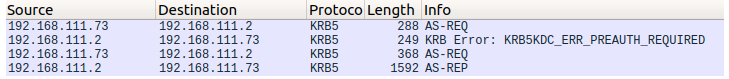

https://dirkjanm.io/krbrelayx-unconstrained-delegation-abuse-toolkit/
Technical details - Unconstrained delegation flow and krbrelayx
Let’s have a look at how a Windows 10 client uses Kerberos with unconstrained delegation. Some write-ups mention that whenever the Windows 10 client requests a service ticket to a host with unconstrained delegation, this ticket automatically includes a delegated version of a TGT. This is not how it actually works. Let’s look at what happens over the wire when a host authenticates to our attacker service.
When our user (testuser) logs in on the workstation, a TGT is requested from the DC (the KDC in this case). This is visible via two AS-REQs, the initial one which requests the TGT without any kind of information, and a second one in which preauthentication information is included.

In the reply to the first AS-REQ, we see that the server replies with the correct salt that should be used in case of AES key deriviation from the password:

Now we make the client connect to our malicious SMB server hosted using krbrelayx. In the traffic we see two requests for a service ticket (TGS-REQ), and after some SMB traffic in which the Kerberos authentication is performed.

Let’s take a closer look at these TGS requests. The first one is as expected, a service ticket is requested for the cifs/attacker.internal.corp SPN which we added to our account previously.

The second one however is interesting. This time the server requests a service ticket not for the service it is connecting to, but for the krbtgt/internal.corp SPN. This is similar to an AS-REQ request, in which this SPN is also used, but now it’s used in a TGS-REQ structure using the TGT with an authenticator. The second interesting part are the flags, especially the forwarded flag. This flag is used to request a TGT which can be used for delegation and will later be sent to the attacker’s rogue service.

How does Windows know whether it should request a forwarded TGT and send this to a server when authenticating? The encrypted ticket part has a ‘flags’ field, in which the ticket options are specified. RFC4120 defines an OK-AS-DELEGATE flag, which specifies that the target server is trusted for unconstrained delegation. Some changes made to getST.py from impacket show us that this flag is indeed set, it is easier however to just list the tickets in Windows with klist:

This command also shows us the forwarded TGT that will be sent to the attacker:

The attackers view
From the attackers perspective, we have set up krbrelayx and it is listening on port 445 and 80 to accept SMB and HTTP connections. When the victim connects to us (for which examples to trigger this are given above), they will authenticate with Kerberos if we request this. Unlike with NTLM authentication, which requires multiple messages back and forth, a client will directly send their Kerberos ticket upon authenticating. In both SMB and HTTP the GSS-API and SPNEGO protocols are used to wrap Kerberos authentication.
Whoever designed these protocols thought it would be a great idea to not only use ASN.1, but to mix ASN.1 with some custom binary constants in one structure (and to let part of that structure depend on the constant). This makes it pretty unusable with any standard ASN.1 library. Fortunately I did find some ways to hack around this, which is already an improvement on having to write your own ASN.1 parser.

Once we reliably parsed the structure, we can see the AP_REQ message containing a Kerberos ticket and an authenticator. These are both important in Kerberos authentication:
- The ticket is encrypted with the password of “our” service. It contains information that identifies the user who is authenticating, as well as an encrypted session key. This ticket is also used for authorization, since it contains a PAC with the groups the user is a member of.
- The authenticator is an structure encrypted with the session key. It proves the client is in posession of this key and is used to authenticate the client.
When you see this in Wireshark, it is easy to notice the difference between a regular Kerberos AP_REQ packet and one where a TGT is sent along with it (unconstrained delegation). A regular AP_REQ packet will contain an encrypted ticket, which is the largest substructure in the AP_REQ structure. In the case of my test domain, the ticket is 1180 bytes. If unconstrained delegation is used, the largest substructure in the AP_REQ is the authenticator, which contains the delegated TGT from the user. In my domain this is 1832 bytes. An authenticator that doesn’t contain a TGT is usually much smaller, around 400 bytes.
Using the previously calculated Kerberos keys, we decrypt the ticket and get the following structure:
EncTicketPart:
flags=1084555264
key=EncryptionKey:
keytype=23
keyvalue=0xbd88d929fc420e8b840f3e4bcd9346b6
crealm=INTERNAL.CORP
cname=PrincipalName:
name-type=1
name-string=SequenceOf:
testuser
transited=TransitedEncoding:
tr-type=1
contents=
authtime=20190216190927Z
starttime=20190216190927Z
endtime=20190217050927Z
renew-till=20190223190927Z
authorization-data=AuthorizationData:
Sequence:
ad-type=1
ad-data=0x308202e230...e8bd0fb67130
Sequence:
ad-type=1
ad-data=0x305d303fa0...6517b0000000000
Contained within are the ticket validity, the username of the ticket, some Authorization Data (which includes the user PAC), and an Encryption key. This Encryption key is the session key, with which we can decrypt the authenticator of the AP_REQ:
Authenticator:
authenticator-vno=5
crealm=INTERNAL.CORP
cname=PrincipalName:
name-type=1
name-string=SequenceOf:
testuser
cksum=Checksum:
cksumtype=32771
checksum=0x100000000...a3997
cusec=84
ctime=20190216192428Z
subkey=EncryptionKey:
keytype=23
keyvalue=0x2b340c020be62cbd6284fd2977c5e303
seq-number=1035294623
authorization-data=AuthorizationData:
Sequence:
ad-type=1
ad-data=0x3081...005000
Here we see again the user that authenticated, another encryption key (subkey), more authorization data, and a checksum (which I’ve cut short). The checksum is the interesting part. If it’s value is equal to 32771 (or 0x8003) it means that it is a KRBv5 checksum, which is a special structure defined in RFC4121 section 4.1.1 (apparently the authors of the RFC were also tired of ASN.1, introducing another custom format for transferring binary data).
Within this checksum field, (if the correct flags are set), we can find a KRB_CRED structure (back to ASN.1!) which contains the delegated TGT.
KRB_CRED:
pvno=5
msg-type=22
tickets=SequenceOf:
Ticket:
tkt-vno=5
realm=INTERNAL.CORP
sname=PrincipalName:
name-type=2
name-string=SequenceOf:
krbtgt INTERNAL.CORP
enc-part=EncryptedData:
etype=18
kvno=2
cipher=0xe70d38ec...c2ec0e
enc-part=EncryptedData:
etype=23
cipher=0xdea2c107a...850ba2a285
There is one more step separating us from obtaining our TGT, which is decrypting the enc-part. This encrypted part of the KRB_CRED structure contains the ticket information, including the session key associated with the delegated TGT, which we need to request service tickets at the DC. After decryption, the tickets are saved to disk, either in ccache format, which is used by impacket, or in kirbi format (which is the name used by Mimikatz for KRB_CRED structured files). The delegated TGT can now be used by other tools to authenticate to any system in the domain.
If this wasn’t detailled enough for you yet, all the steps described in this section are outlined in the kerberos.py file of krbrelayx. If you uncomment the print statements at various stages you can view the full structures.